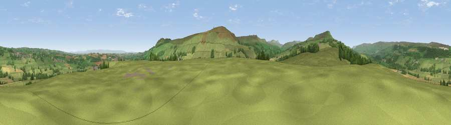

Viewpoint near Coverham
#13389 in England · top 25% of its area beats it · near CoverhamThe view, rendered

A 360° render of this exact spot computed from the terrain model, tree cover and land cover — summer colours, afternoon light, calibrated against photographs of famous viewpoints. Real trees, hedges and buildings will differ in detail.
The panorama
Grey silhouette: terrain skyline in each direction (720 bearings, Earth curvature and refraction included). Dashed green: skyline with trees (+15 m) and buildings (+8 m) as obstacles. Blue strip: how far the ground is visible on each bearing.
Where the view opens
Wedge length = distance to the farthest visible ground on that bearing (vegetation-aware). Rings at 10, 25 and 50 km.
What fills the view
79% grassland · 11% woodland · 8% cropland · 1% built-up
Angular shares of the visible panorama (visual magnitude), not map area. Landscape diversity 0.31 (0–1 Shannon).
Key numbers
More beautiful places nearby
The staircase of upgrades: each row has a higher view potential than everything closer. Driving times are estimates from straight-line distance, calibrated against real road routing — check an actual route before setting out.
| Place | Direction | Drive | Score |
|---|---|---|---|
| Viewpoint near Coverham | SSE · 2 km | ~6 min | 68.5 |
| Viewpoint near Coverham | S · 3 km | ~6 min | 73.7 |
| Viewpoint near East Witton | SE · 4 km | ~9 min | 74.4 |
| Viewpoint near East Witton | SE · 4 km | ~10 min | 77.8 |
| Viewpoint near Kirby Knowle | E · 35 km | ~53 min | 80.5 |
| Beacon Hill | ENE · 37 km | ~56 min | 84.7 |
| Carlton Bank | ENE · 44 km | ~64 min | 85.1 |
| Roseberry Topping | ENE · 54 km | ~75 min | 85.8 |
54.28236, -1.83984 · source: screening · position refined by local search. Computed location — check access rights before visiting.